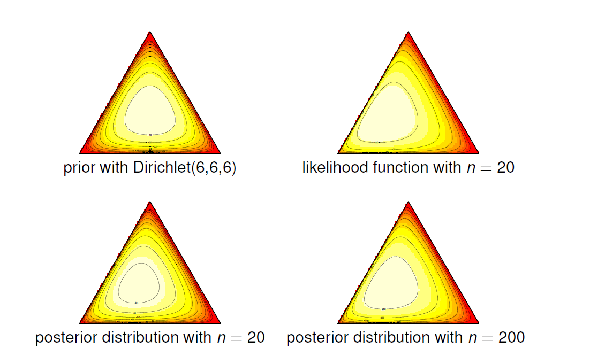
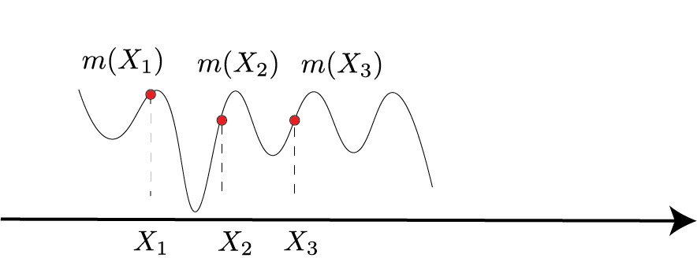
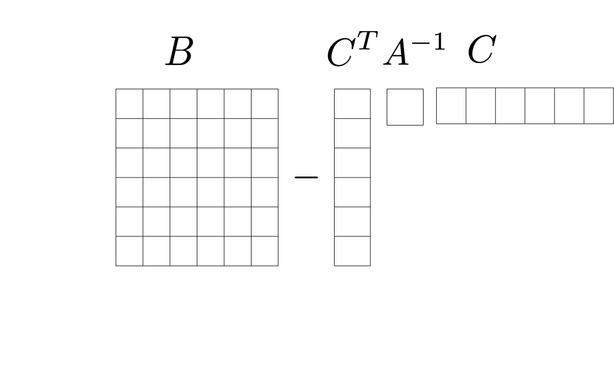

Gaussian Processes
Bayesian Inference
The parameter $\theta$ in Bayesian Inference is viewed as a random variable. Usually, the following steps are taken:
- Choose a generative model $p(x|\theta)$ for the data
- Choose a prior distribution $\pi(\theta)$
- After observing data points $\{x_1,x_2,..,x_n\}$ calculate posterior distribution $p(\theta | x_1, ..,x_n)$
Bayes’ Theorem
A simple consequence of conditional probability:
$$ \begin{aligned} P(A|B) = & \frac{P(A \cup B)}{P(B)} \\ = & \frac{P(B|A)P(A)}{P(B)} \end{aligned} $$
Using this theorem, we can write down the posterior distribution:
$$ \begin{aligned} P(\theta|x_1,..,x_n) =& \frac{P(x_1,..,x_n|\theta)\pi(\theta) }{P(x_1,..,x_n)} \\ = &\frac{\mathcal{L}_n(\theta)\pi(\theta)}{c_n} \\ \propto & \mathcal{L}_n(\theta)\pi(\theta) \end{aligned} $$
where $\mathcal{L}_n(\theta)$ is the likelihood function and:
$$ c_n = \int \mathcal{L}_n(\theta) \pi(\theta) d\theta $$
Is the normalizing constant or evidence?
Example 1:
Take model $X\sim \text{Bernoulli}(\theta)$. Flipping a coin (i.e., $X\in \{0,1\}$) is an example of this distribution. Natural prior over parameter $\theta$ is Beta$(\alpha,\beta)$ distribution: $$ \pi_{\alpha,\beta}(\theta) \propto \theta^{\alpha-1}(1-\theta)^{\beta-1} $$
$\alpha$ and $\beta$ determine the shape of the prior distribution. A perfect property of this model is that the posterior distribution is also the Beta distribution.
Observing data:
Let $s=\sum_{i=1}^n x_i$ be the number of heads over $n$ trials. Posterior distribution $\theta | x_1,..,x_n$ is another Beta distribution:
$$ \begin{aligned} \tilde{\alpha} = \alpha+ \text{number of heads} = \alpha +s \\ \tilde{\beta} = \beta+ \text{number of tails} = \alpha+n-s \end{aligned} $$
Bernoulli distribution is conjugate to the Beta prior. We will cover in this post that the Gaussian process is similar in that the posterior distribution has the same form as the prior distribution.
Dirichlet$_\alpha(\theta)$
A general form for the coin problem is dice trial:
$$ \text{Dirichlet}_\alpha(\theta) \propto \theta_1^{\alpha_1-1} \theta_2^{\alpha_2-1} .. \theta_K^{\alpha_K-1} $$
where $\alpha=(\alpha_1,..,\alpha_k)\in \mathbb{R}_+^K$ is a non-negative vector. For example, in a regular dice, we have six parameters. Probability of rolling $1$ is $\theta_1^{\alpha_1-1}$ and etc.

Indeed, when we see more and more data, the Dirichlet distribution will concentrate on proper parameters, or the variance will be $0$. We will see that the pick of the posterior or maximum posterior (MAP) estimator is the mode of the data.
Nonparametric Bayesian Inference
Here we want to make Bayesian inference for functions. Typically neither the prior nor the posterior have a density, but the rear is still well-defined. We can’t compute posterior distribution, but we can sample from it.

Stochastic Processes
In stochastic processes, we have a set of random variables $\{X_i\}_t$. The other way of representing stochastic functions is:
$$ t \rightarrow X_t(\omega) $$
It is now a random function indexed by time (let’s say a time series). I will get another stochastic function if I have another random $\omega$. Recall that $\omega$ is coming from probability space here, and we are drawing samples from there and computing $X_t(\omega)$.
Gaussian Processes
Suppose I have a Gaussian distribution in $2$ dimension.
Let’s say we have the following:
$$X =
\begin{pmatrix}
X_1 \\
X_2
\end{pmatrix} = \text{Normal} \Big(
\begin{pmatrix}
0 \\
0
\end{pmatrix},
\begin{pmatrix}
K_{11} & K_{12} \\
K_{21} & K_{22}
\end{pmatrix}
\Big)
$$
What can we tell about matrix $K$?
- It’s symmetric: $K_{12} = K_{21}$
- It’s positive definite: $K\succcurlyeq 0$
Which are Mercer properties. The conditionals are also Gaussian:
$$ \begin{aligned} X_2|X_1 = \text{Normal}\Big( \frac{K_{12}}{K_{22}}X_2, K_{11}-\frac{K_{12}^2}{K_{22}}\Big) \\ X_1|X_2 = \text{Normal}\Big( \frac{K_{12}}{K_{11}}X_1, K_{22}-\frac{K_{12}^2}{K_{11}}\Big) \end{aligned} $$
If these random variables are not correlated then $K_{12}$ and $K_{21}$ will be $0$. So the posterior will be $\mu=0$ and $\Sigma=K_{22}$.
How about multidimensional Gaussian?
$$X =
\begin{pmatrix}
X_1 \\
X_2 \\
X_3
\end{pmatrix} = \text{Normal} \Big(
\begin{pmatrix}
0 \\
0 \\
0
\end{pmatrix},
\begin{pmatrix}
K_{11} & K_{12} & K_{13}\\
K_{21} & K_{22} & K_{23} \\
K_{31} & K_{32} & K_{33}
\end{pmatrix}
\Big)
$$
Again:
- It’s symmetric: $K_{12} = K_{21}$
- It’s positive definite: $K\succcurlyeq 0$
Stochastic process is a Gaussian process $m$ if for every finite set $X_1,X_2,..,X_N$, $m(x_1),m(x_2), .., m(x_N)$ is normally distributed

$$X =
\begin{pmatrix}
m(X_1) \\
\vdots \\
m(X_N)
\end{pmatrix} = \text{Normal} \Big(
\mu(X),K(X)
\Big)
$$
Where:
$$ K(X) = \begin{pmatrix} K(X_i,X_j) \end{pmatrix} $$
Where $K$ is a Mercer kernel.
Let’s fix some values $X_1, X_2,.., X_N$. $ K$ will indicate our covariance matrix. What is the prior distribution over $m$?
$$ \pi(m) = (2\pi)^{-n/2}|K|^{-1/2} \exp \Big( -\frac{1}{2} m^T K^{-1}m\Big) $$
In other words, our prior over these $n$ points is $\pi(m)$.
Similar to Mercer kernel regression, now we can do a change of variable $m=K\alpha$ where $\alpha \sim \text{Normal}(0, K^{-1})$. So specifying prior on $m$ is equivalent to specifying prior on $\alpha $: $$ \pi(\alpha) = (2\pi)^{-n/2}|K|^{-1/2} \exp \Big( -\frac{1}{2} \alpha^T K \alpha\Big) $$
What functions have high probability according to the Gaussian process prior? The prior favors $mK^{-1}m$ being small.
Recall
Let $v$ is eigenvector of $K$ with eigenvalue $\lambda$ then:
$$ \frac{1}{\lambda} = v^T K^{-1}v $$
Using the likelihood
We observe $Y_i = m(X_i)+\epsilon_i$ where $\epsilon_i \sim \text{Normal}(0,\sigma^2)$.
$$ \log p(Y_i|X_i) = -\frac{1}{2\sigma^2} (Y_i - m(X_i))^2 $$
And then:
$$ \begin{aligned} \log \pi(m) \propto & \log \exp(-1/2m^TK^{-1}m) \\ \propto & -1/2m^T K^{-1} m \end{aligned} $$
If we combine them: $$ \begin{aligned} \log p(Y|X, m) + \log \pi(m) = & -\frac{1}{2\sigma^2} \sum_i (Y_i - m(X_i))^2 - 1/2m^TK^{-1}m \\ =& -\frac{1}{2\sigma^2} (Y-K\alpha)^2 -1/2\alpha^TK\alpha \end{aligned} $$
MAP estimation
This is MAP estimation: $$ \hat{\alpha} = \arg\max ||Y-K\alpha||^2 + \sigma^2\alpha^TK\alpha $$
And we have a solution for this based on Mercer’s kernel:
$$ \hat{\alpha} = (K+\sigma^2I)^{-1}Y $$
and our estimation for $\hat{m}$:
$$ \begin{aligned} \hat{m} = & K \hat{\alpha} \\ = & K(K+\sigma^2I)^{-1}Y \end{aligned} $$
Note: a general formula for $n$ dimensional data points:
Suppose $(X_1,X_2)$ are jointly Gaussian with distribution:
$$X =
\begin{pmatrix}
X_1 \\
X_2
\end{pmatrix} = \text{Normal} \Big(
\begin{pmatrix}
\mu_1 \\
\mu_2
\end{pmatrix},
\begin{pmatrix}
A & C \\
C^T & B
\end{pmatrix}
\Big)
$$
Then the conditional distributions are:
$$ \begin{aligned} X_1|x_2 =& \text{Normal}\Big( \mu_1+ CB^{-1}(x_2-\mu_2), A-CB^{-1}C^T\Big) \\ X_2|x_1 = &\text{Normal}\Big( \mu_2+ C^TA^{-1}(x_1-\mu_1), B-C^TA^{-1}C\Big) \end{aligned} $$
The covariance matrix will be in a similar form as follows: 
We covered this post in the intermediate machine learning SDS 365/565, Yale University, John Lafferty, where I was TF.